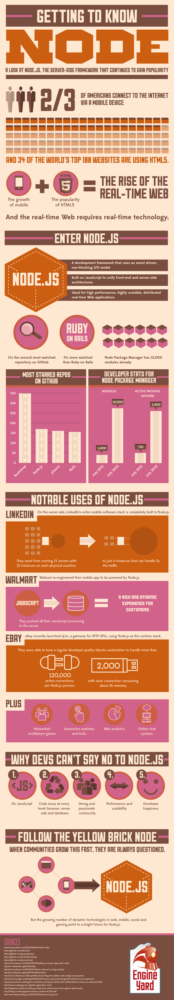

Javascript Attacks!!
The dumb toy-language is conquering
the world. What we should do?!
Fernando Lores
@ferlores
Let's talk about
Browser
Mobile
Server
Desktop
Rule of the Least Power
Computer Science spent the last forty years
making languages as powerful as possible.
The less powerful the language, the
more you can do with the data stored in it.
- Tim Berners-Lee, W3C, Feb 2006
If you write it in a simple declarative from, anyone can write a program to analyze it.
Ejemplo: wheater data, RDF vs java applet
First Corollary
Any application that can be written in
JavaScript
will eventually be written in
- Jeff Atwood's Law, www.codinghorror.com, 2007
Popularidad: todos los programadores web usaron alguna vez js
http://www.codinghorror.com/blog/2007/07/the-principle-of-least-power.html
HTML
5
New Markup + APIs!
HTML5: W3C Jan 2008
Nuevamente javascript fue la opcion natural para estas apis
Standar para consumir APIs
CSS3
GENERAL PURPOSE
Online/offline+File Api+LocalStorage
Drag n' Drop+Progress Bar+PushState
Geolocalization
Websockets
Standar para consumir APIs
- HTML5
- CSS3
*presentacion como ejemplo
- pushState / drag&drop / progress bar / File Api
* ?
- Audio/Video
* ejemplo webcam
- Online/offline - LocalStorage
- Geolocalization
- Graficos: SVG/Canvas/WEBGL
- Websockets
philoDb / easel.js / Trhee.js
* Webcam http://neave.github.com/face-detection/
* File API simple: http://html5demos.com/file-api-simple
* Geolocalization: http://html5demos.com/geo
* Drag anything http://html5demos.com/drag-anything
* Progress Bar: upload http://html5demos.com/dnd-upload
CartoDB - Google maps
* Pixastic: http://www.pixastic.com/
http://en.wikipedia.org/wiki/HTML5
Apache Cordova - PhoneGap
nativas vs web
wrapper multiplataforma
aplicaciones nativas en JS!
Api para acceder al hardware: acelerometro, contactos, geoposicion, etc
PhoneGap Build had 23,000+ applications and 10,000+ users run through it as of July 2011. They were growing at 2,000 users a month for a few months consecutively leading up to July 2011... assuming they've had similar growth over the past 7 months, then they're probably at around 20-24,000 users and 50,000+ applications (on PhoneGap Build). No idea how many of these "applications" are functional or in use, but at least it's a number, I guess.
Source: http://www.slideshare.net/AndreCharland/phone-gap-stats-growth
Boot to Gecko - Firefox OS

- KERNEL LINUX QUE RENDERIZA HTML5 + APIS
- NO SE PUEDE INSTALAAR EN PHONES YET
- EMULADOR PARA PC
MIRAR TALK LXJS
http://rawkes.com/articles/there-is-something-magical-about-firefox-os
In the far 2009 Ryan Dahl got an idea...
Blocking vs Non-Blocking
var result = db.query("select * from T");
// do something with result
VS
db.query("select..", function (result) {
// use result
});
//execution continues
porque no fue asi antes:
cultural: rejected as too complex,
infraestructura: C, C++, Java no tienen Fuciones anonimas
Event loop - Single thread
NO MORE THREAD DEADLOCK!
\o/
Event loop - Single thread
More predictable app server memory usage
More concurrent requests, like Nginx vs Apache

nginx v0.7.65
node v0.1.91
tornado v0.2 (python 2.6.4)
thin v1.2.7 (ruby 1.9.1-p376)
Google V8
- First beta release on Sept 2008 for Windows
- Compile into machine code - no reiterpretation
- Better Garbage collector: precise pointer objects, incremental garbage collector, quick round-trips
Great comic http://en.wikipedia.org/wiki/Google_Chrome
WATCH THIS!!!
http://blip.tv/jsconf/jsconf2012-vyacheslav-egorov-6141593
http://en.wikipedia.org/wiki/Google_Chrome
http://www.google.com/googlebooks/chrome/
Compile into machine code
Better Garbage Collector
It is fast!
It is fast!
It is fast!
It is fast!
It is fast!
It is fast!
Speed! - shootout.alioth.debian.org
Rapid Application Development
EASY
to learn
to develop
to deploy
FUN!
// Webserver code
var http = require('http');
http.createServer(function (req, res) {
res.writeHead(200, {'Content-Type': 'text/plain'});
res.end('Hello World\n');
}).listen(80, '127.0.0.1');
Plays nice with
NO-SQL
Doc «-» JSON
{
_id : ObjectId("4e77bb3b8a3e000000004f7a"),
when : Date("2011-09-19T02:10:11.3Z",
author : "alex",
title : "No Free Lunch",
text : "This is the text of the post. It could be very long.",
tags : [ "business", "ramblings" ],
votes : 5,
voters : [ "jane", "joe", "spencer", "phyllis", "li" ],
comments : [
{ who : "jane", when : Date("2011-09-19T04:00:10.112Z"),
comment : "I agree." },
{ who : "meghan", when : Date("2011-09-20T14:36:06.958Z"),
comment : "You must be joking. etc etc ..." }
]
}
JSON formato de intercambio que reemplaza XML
Naturaleza dinamica de objectos - loose typing
Funciones Map-Reduce
Real-time applications
Websockets
bi-directional
full-duplex
single TCP connection
- antes 15 minutos era una ventana de tiempo tolerable
hoy 5 segundos es tarde
- webpages real-time hace que los usuarios se queden mas
kickstarter:
websockets cs long pooling
manera eficiente de implementarlos
mostrar now.jitsu.com
Socket.io:
- full technology in modern browsers
- many fallback: long pooling, flash, etc
- works even on IE6
WebSocket
Adobe® Flash® Socket
AJAX long polling
AJAX multipart streaming
Forever Iframe
JSONP Polling
Supported browsers
Desktop
Internet Explorer 5.5+
Safari 3+
Google Chrome 4+
Firefox 3+
Opera 10.61+
Mobile
iPhone Safari
iPad Safari
Android WebKit
WebOs WebKit
Cloud freemium options
nodejs bigest sponsor Joyent,
Heroku early bringing node to the cloud,
allow websockets Nodejitsu,
Cloud9 includes an online IDE for dev,
nodejs as an option Engine Yard.

NODE: fast develop (RAD), real time apps, non-blocking, high-concurrency, NPM, Github,
Gnome3
Windows 8
Appjs
1+1
global.get_window_actors()
global.get_window_actors().forEach(function (w) { Tweener.addTween(w, { time: 3, transition: 'easeOutQuad', scale_x: 0.3, scale_y: 0.3 })})
global.get_window_actors().forEach(function (w) { w.set_scale(1, 1) })
global.get_window_actors()[0]
it.scale_x
- Desktop
- Gnome3
* mostrar consolita
- Microsoft 8
- appjs
Can you see it?
And so What?

- no es javascript por ser javascript. Son las circunstancias
- otros lenguajes que compilan a javascript:
- no van a ser tan facil desplazarlo
- javascript no es feo, solo necesita un poco de carinio
EXTRAS: http://www.chromeexperiments.com/
THANKS